import pandas as pd # data manipulation and analysis.
import geopandas as gpd # spatial data operations
from shapely.geometry import Point, Polygon # handling geometric points
import numpy as np # multi-dimensional arrays and matrices
# Creating static, animated, and interactive visualizations in Python.
import matplotlib.pyplot as plt
from matplotlib.colors import LinearSegmentedColormap
from matplotlib import cm
import seaborn as sns # drawing attractive statistical graphics.
# Adding basemaps
import contextily as cx # adding basemaps
# sklearn.cluster - a module in the Scikit-Learn library (sklearn) used for clustering (unsupervised learning)
from sklearn import metrics
from sklearn.cluster import DBSCAN
from sklearn.neighbors import NearestNeighbors
#ESDA: Exploratory Spatial Data Analysis
from esda.adbscan import ADBSCAN, get_cluster_boundary, remap_lblsLab in Python
Points
Points are spatial entities that can be understood in two fundamentally different ways. On the one hand, points can be seen as fixed objects in space, which is to say their location is taken as given (exogenous). In this case, analysis of points is very similar to that of other types of spatial data such as polygons and lines. On the other hand, points can be seen as the occurence of an event that could theoretically take place anywhere but only manifests in certain locations. This is the approach we will adopt in the rest of the notebook.
When points are seen as events that could take place in several locations but only happen in a few of them, a collection of such events is called a point pattern. In this case, the location of points is one of the key aspects of interest for analysis. A good example of a point pattern is crime events in a city: they could technically happen in many locations but we usually find crimes are committed only in a handful of them. Point patterns can be marked, if more attributes are provided with the location, or unmarked, if only the coordinates of where the event occured are provided. Continuing the crime example, an unmarked pattern would result if only the location where crimes were committed was used for analysis, while we would be speaking of a marked point pattern if other attributes, such as the type of crime, the extent of the damage, etc. was provided with the location.
Point pattern analysis is thus concerned with the description, statistical characerisation, and modeling of point patterns, focusing specially on the generating process that gives rise and explains the observed data. What’s the nature of the distribution of points? Is there any structure we can statistically discern in the way locations are arranged over space? Why do events occur in those places and not in others? These are all questions that point pattern analysis is concerned with.
This notebook aims to be a gentle introduction to working with point patterns in Python. As such, it covers how to read, process and transform point data, as well as several common ways to visualize point patterns.
Importing Modules
Data
We are going to continue with Airbnb data in a different part of the world.
Airbnb Buenos Aires
Let’s read in the point dataset:
# read the Airbnb listing
listings = pd.read_csv("data/BuenosAires/listings_nooutliers.csv")
# Show summary statistics of the dataset
print(listings.describe()) id host_id neighbourhood_group latitude \
count 1.857200e+04 1.857200e+04 0.0 18572.000000
mean 2.867385e+07 1.086210e+08 NaN -34.592447
std 1.418299e+07 1.075071e+08 NaN 0.017905
min 6.283000e+03 2.616000e+03 NaN -34.689621
25% 1.846015e+07 1.383494e+07 NaN -34.602909
50% 3.175833e+07 6.603382e+07 NaN -34.591709
75% 4.000713e+07 1.889644e+08 NaN -34.582119
max 5.110064e+07 4.125068e+08 NaN -34.533298
longitude price minimum_nights number_of_reviews
count 18572.000000 18572.000000 18572.000000 18572.000000
mean -58.415045 5423.835667 6.996016 15.924779
std 0.029366 28865.078495 20.730803 33.354753
min -58.530930 218.000000 1.000000 0.000000
25% -58.434413 1800.000000 2.000000 0.000000
50% -58.414255 2790.000000 3.000000 3.000000
75% -58.391129 4470.500000 5.000000 16.000000
max -58.355412 962109.000000 730.000000 500.000000 Let’s finish preparing it, note the CRS.
# Locate the longitude and latitude
print(listings.columns)
# Use columns 'longitude' and 'latitude' respectively
listings_gdf = gpd.GeoDataFrame(
listings, geometry=gpd.points_from_xy(listings.longitude, listings.latitude), crs="EPSG:4326"
)Index(['id', 'name', 'host_id', 'host_name', 'neighbourhood_group',
'neighbourhood', 'latitude', 'longitude', 'room_type', 'price',
'minimum_nights', 'number_of_reviews', 'last_review'],
dtype='object')Adminstrative Areas
We will later use administrative areas for aggregation. Let’s load them.
# We will later use administrative areas for aggregation. Let's load them.
BA = gpd.read_file("data/BuenosAires/neighbourhoods_BA.shp")Spatial Join
# Perform spatial overlay between points and polygons
listings_BA = listings_gdf.sjoin(BA, how="inner", predicate='intersects')
# Read the first lines of the attribute table
print(listings_BA.head()) id name host_id host_name \
0 6283 Casa Al Sur 13310 Pamela
11 15889 ROOM W /BALCONY-DOWNTOWN ...... 62183 Sonia
105 93174 B&B "Tucuman 2430"1 room x 1 or 2p 500210 Luciano
116 107259 Great place to 12 Tango lovers 555693 Vittoria
123 119966 Room with library downtown 62183 Sonia
neighbourhood_group neighbourhood latitude longitude room_type \
0 NaN Balvanera -34.605228 -58.410419 Entire home/apt
11 NaN Balvanera -34.603458 -58.411789 Private room
105 NaN Balvanera -34.602989 -58.401939 Private room
116 NaN Balvanera -34.605141 -58.395699 Entire home/apt
123 NaN Balvanera -34.603958 -58.400681 Private room
price minimum_nights number_of_reviews last_review \
0 4810 3 1 2011-01-31
11 3505 3 6 2011-07-11
105 1136 2 10 2012-08-04
116 38384 3 26 2018-02-12
123 3506 3 0 NaN
geometry index_right neighbourh neighbou_1
0 POINT (-58.41042 -34.60523) 30 Balvanera NaN
11 POINT (-58.41179 -34.60346) 30 Balvanera NaN
105 POINT (-58.40194 -34.60299) 30 Balvanera NaN
116 POINT (-58.39570 -34.60514) 30 Balvanera NaN
123 POINT (-58.40068 -34.60396) 30 Balvanera NaN .sjoin(BA, how="inner", predicate='intersects'): This function performs a spatial join between listings_gdf and BA where:how="inner"ensures that only matching records (where the spatial relationship is true) are included.predicate='intersects'specifies that the join condition is based on whether the geometries intersect.
One-to-one
The first approach we review here is the one-to-one approach, where we place a dot on the screen for every point to visualise. In order to actually see all the neighbourhood names we need to do a bit of formatting work.
# Assuming 'neighbourhood' is a column in your listings_gdf GeoDataFrame
# Plot the GeoDataFrame with neighborhoods colored differently
fig, ax = plt.subplots(figsize=(15, 5))
listings_gdf.plot(column='neighbourhood', ax=ax, legend=True, cmap='Set1',
legend_kwds={'loc': 'center left', 'bbox_to_anchor': (1.2, 0.5), 'fontsize': 'x-small', 'ncol': 2, "fmt": "{:.0f}"})
# Set plot title and labels
ax.set_title('Airbnb Listings by Neighbourhood', fontsize=15)
ax.set_xlabel('Longitude')
ax.set_ylabel('Latitude')
# Adjust the subplot parameters to give more space for the legend
plt.subplots_adjust(right=0.5)
# Show the plot
plt.show()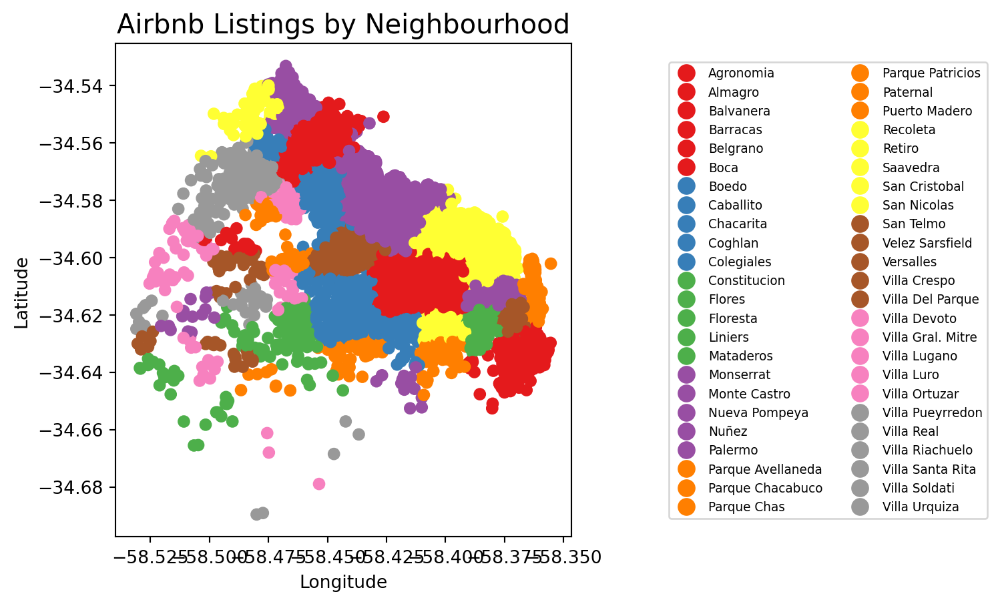
figsize=(35, 10): create different spaces for map and legend part of imagelegend_kwds: This dictionary allows you to customize the legend’s position and appearance.loc='center left': Positions the legend on the center left of the bounding box.bbox_to_anchor=(1.2, 0.5): Moves the legend outside the plot area to the right. The (1.2, 0.5) specifies that the anchor point of the legend is placed at 120% (right edge) on the x-axis and 50% (center) on the y-axis of the bounding box.fontsize='x-small': This reduces the size of the text in the legend. You can use specific sizes like ‘small’, ‘x-small’, ‘medium’, or specify a numeric value (e.g., fontsize=8).'ncol': 2: This specifies that the legend should be displayed in two columns. You can adjust this number to display more or fewer columns as needed.
We can visualise a bit better with a basemap
# If it's not already, convert it using `to_crs(epsg=3857)`
listings_gdf_3857 = listings_gdf.to_crs(epsg=3857)
# Assuming `listings_gdf` is your GeoDataFrame and it's already loaded with data
fig, ax = plt.subplots(figsize=(15, 5))
# Plot the GeoDataFrame
listings_gdf_3857.plot(column='neighbourhood', ax=ax, legend=False, cmap='Set1')
# Add basemap using contextily
# Note: The GeoDataFrame needs to be in Web Mercator projection for contextily basemaps
#listings_gdf = listings_gdf.to_crs(epsg=3857)
cx.add_basemap(ax, crs=listings_gdf_3857.crs.to_string())
cx.add_basemap(
ax,
crs="EPSG:3857",
source=cx.providers.CartoDB.Positron
)
# Set plot title and labels
ax.set_title('Airbnb Listings by Neighbourhood', fontsize=15)
ax.set_xlabel('Longitude')
ax.set_ylabel('Latitude')
# Show the plot
plt.show()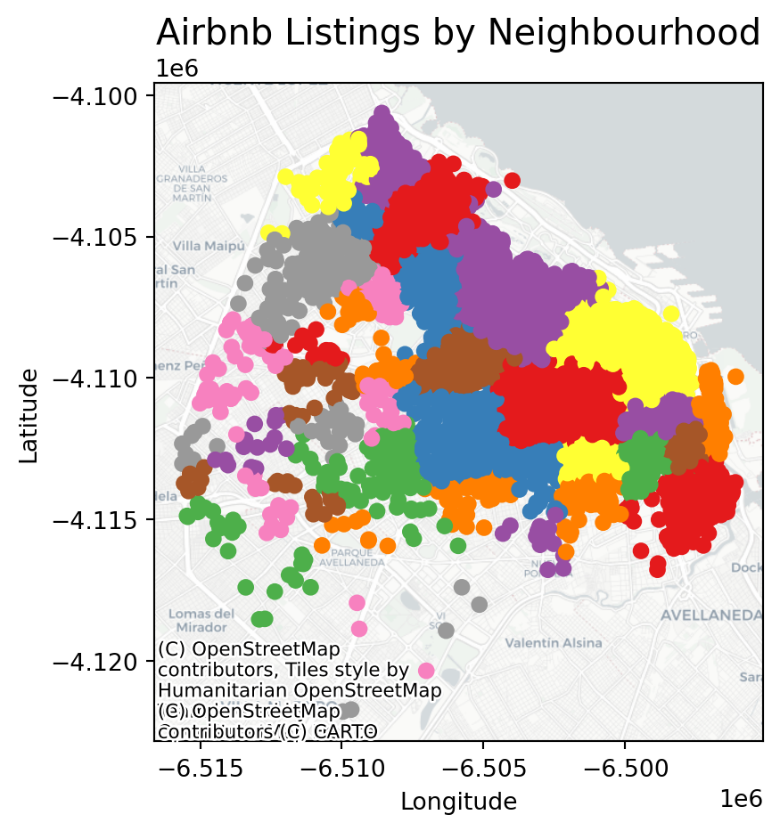
Points meet polygons
The approach presented above works until a certain number of points to plot; tweaking dot transparency and size only gets us so far and, at some point, we need to shift the focus. Having learned about visualizing lattice (polygon) data, an option is to “turn” points into polygons and apply techniques like choropleth mapping to visualize their spatial distribution. To do that, we will overlay a polygon layer on top of the point pattern, join the points to the polygons by assigning to each point the polygon where they fall into, and create a choropleth of the counts by polygon.
This approach is intuitive but of course raises the following question: what polygons do we use to aggregate the points? Ideally, we want a boundary delineation that matches as closely as possible the point generating process and partitions the space into areas with a similar internal intensity of points. However, that is usually not the case, no less because one of the main reasons we typically want to visualize the point pattern is to learn about such generating process, so we would typically not know a priori whether a set of polygons match it. If we cannot count on the ideal set of polygons to begin with, we can adopt two more realistic approaches: using a set of pre-existing irregular areas or create a artificial set of regular polygons. Let’s explore both.
Irregular lattices
To exemplify this approach, we will use the administrative areas we have loaded above. Let’s add them to the figure above to get better context (unfold the code if you are interested in seeing exactly how we do this):
# Plot the administrative boundaries (BA) and listings with neighborhoods colored differently
fig, ax = plt.subplots(figsize=(5, 5))
# Plot the BA GeoDataFrame with no fill and a specific line size
BA.plot(ax=ax, edgecolor='black', linewidth=1.5, facecolor='none')
# Plot the listings with neighborhoods colored differently, specific point size, and transparency
listings_gdf.plot(column='neighbourhood', ax=ax, cmap='Set1', markersize=5, alpha=0.5)
# Set plot title and labels
ax.set_title('Airbnb Listings and Administrative Areas', fontsize=15)
ax.set_xlabel('Longitude')
ax.set_ylabel('Latitude')
# Show the plot
plt.show()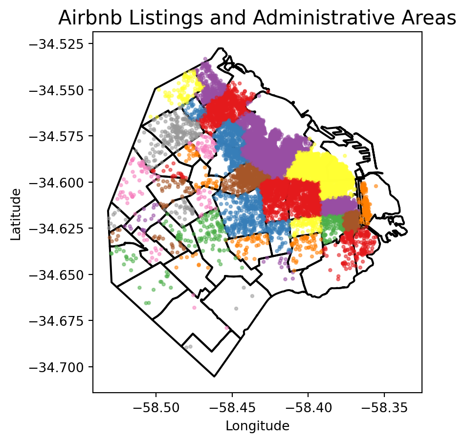
Now we need to know how many airbnb each area contains.
# Aggregate at district level
listings_BA_agg = listings_BA.groupby(['neighbourh']).agg(
count_airbnb=('price', 'size'), # count number of sales
mean_price=('price', 'mean') # calculate average price
).reset_index()
# Merge the aggregated data back with the original GeoDataFrame to retain geometry
airbnb_neigh_agg = BA[['neighbourh', 'geometry']].drop_duplicates().merge(
listings_BA_agg, on='neighbourh'
)The lines above have created a new column in our table called count_airbnb that contains the number of airbnb that have been taken within each of the polygons in the table. mean_price shows the mean price per neighbourhood.
At this point, we are ready to map the counts. Technically speaking, this is a choropleth just as we have seen many times before:
# Create a figure and axis for plotting
fig, ax = plt.subplots(figsize=(5, 5))
# Reverse the 'viridis' colormap
viridis = plt.get_cmap('viridis')
viridis_reversed = viridis.reversed()
# Plot the geometries with fill color based on 'count_airbnb' and a white border
airbnb_neigh_agg.plot(column='count_airbnb', ax=ax, edgecolor='white', cmap=viridis_reversed, legend=True)
# Add text labels at the centroids of the districts
for idx, row in airbnb_neigh_agg.iterrows():
centroid = row['geometry'].centroid
ax.text(centroid.x, centroid.y, row['neighbourh'], fontsize=5, ha='center')
# Set the title
ax.set_title("Count of Airbnbs by Neighbourhood")
# Remove axis
ax.set_axis_off()
# Show the plot
plt.show()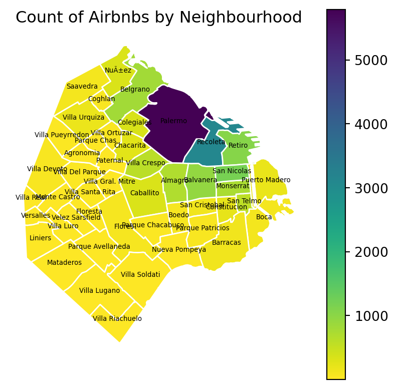
The map above clearly shows a concentration of airbnb in the neighbourhoods of Palermo and Recoleta. However, it is important to remember that the map is showing raw counts. In the case of airbnbs, as with many other phenomena, it is crucial to keep in mind the “container geography” (MAUP). In this case, different administrative areas have different sizes. Everything else equal, a larger polygon may contain more photos, simply because it covers a larger space. To obtain a more accurate picture of the intensity of photos by area, what we would like to see is a map of the density of photos, not of raw counts. To do this, we can divide the count per polygon by the area of the polygon.
Let’s first calculate the area in Sq. metres of each administrative delineation:
# Convert CRS to EPSG:22176 for Argentina
airbnb_neigh_agg_proj = airbnb_neigh_agg.to_crs(epsg=22176)
# Calculate area in square kilometers and add it to the DataFrame
airbnb_neigh_agg_proj['area_km2'] = airbnb_neigh_agg_proj.geometry.area / 1e6 # Convert area to square kilometers
# Calculate density
airbnb_neigh_agg_proj['density'] = airbnb_neigh_agg_proj['count_airbnb'] / airbnb_neigh_agg_proj['area_km2']With the density at hand, creating the new choropleth is similar as above:
# Create a figure and axis for plotting
fig, ax = plt.subplots(figsize=(5, 5))
# Reverse the 'viridis' colormap
viridis = plt.get_cmap('viridis')
viridis_reversed = viridis.reversed()
# Plot the geometries with fill color based on 'count_airbnb' and a white border
airbnb_neigh_agg_proj.plot(column='density', ax=ax, edgecolor='white', cmap=viridis_reversed, legend=True)
# Set the title
ax.set_title("Density of Airbnbs by Neighbourhood")
# Remove axis
ax.set_axis_off()
# Show the plot
plt.show()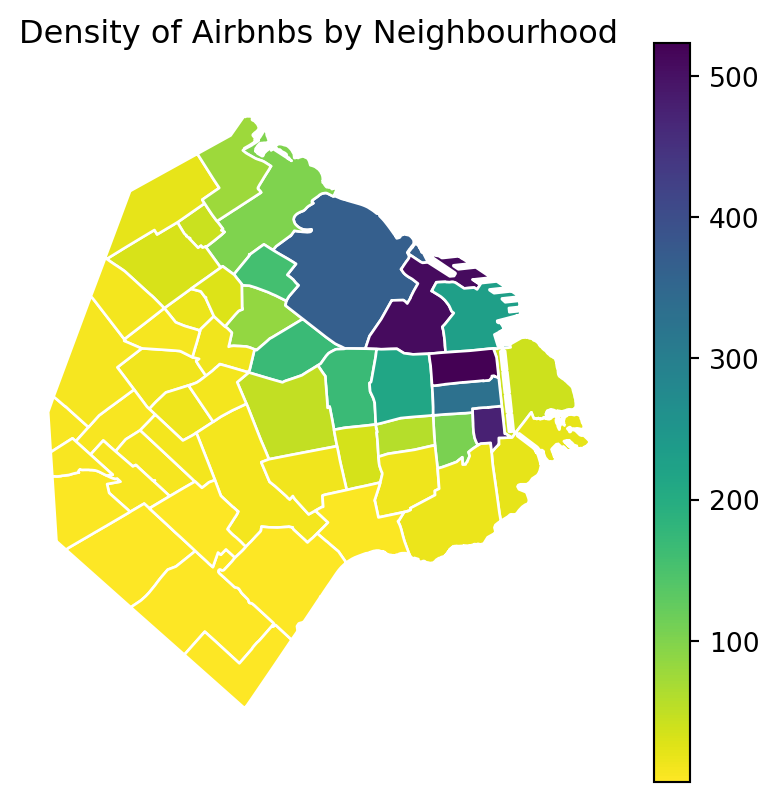
We can see some significant differences. Why is that? Have a chat with the person next to you.
Regular lattices: hex-binning
Sometimes we either do not have any polygon layer to use or the ones we have are not particularly well suited to aggregate points into them. In these cases, a sensible alternative is to create an artificial topology of polygons that we can use to aggregate points. There are several ways to do this but the most common one is to create a grid of hexagons. This provides a regular topology (every polygon is of the same size and shape) that, unlike circles, cleanly exhausts all the space without overlaps and has more edges than squares, which alleviates edge problems.
Important
If you are still still not sure on the difference between geographic coordinate systems and projected coordinated system go back to Lecture 1.
First we need to make sure we are in a projected coordinated system:
# Reproject the administrative areas to the CRS for Argentina (EPSG:22176)
BA_proj = BA.to_crs(epsg=22176)
# Reproject the listings to match the CRS of the administrative areas
listings_proj = listings_gdf.to_crs(epsg=22176)Then we create a grid that’s 500 metre by 500 metres. We need to be in a projected coordinate system for this to work.
Python has a simplified way to create this hexagon layer and aggregate points into it in one shot thanks to the method hexbin, which is available in every axis object (e.g. ax). Let us first see how you could create a map of the hexagon layer alone:
# Setup figure and axis
f, ax = plt.subplots(1, figsize=(5, 5))
# Add hexagon layer that displays count of points in each polygon
hb = ax.hexbin(
listings_proj["longitude"],
listings_proj["latitude"],
gridsize=50,
)
# Add a colorbar (optional)
plt.colorbar(hb)
# Show the plot
plt.show()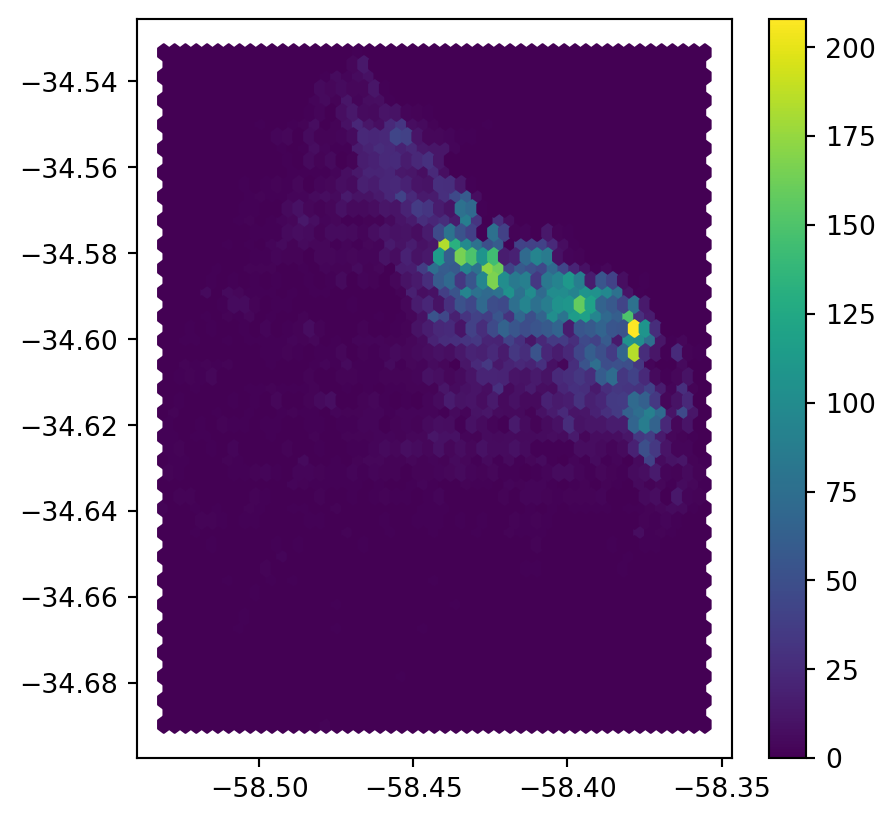
Let’s unpack the coded here:
- Call
hexbindirectly using the set of coordinate columnslistings_proj["longitude"]andlistings_proj["latitude"]. - Additional arguments we include is the number of hexagons by axis (gridsize, 50 for a 50 by 50 layer), and the transparency we want (80%).
- Additionally, we include a colorbar to get a sense of how counts are mapped to colors. Note that we need to pass the name of the object that includes the
hexbin(hb in our case), but keep in mind this is optional, you do not need to always create one.
You could also add a basemap to visualise the results better as we’ve done in other code snippets.
Kernel Density Estimation
Using a hexagonal binning can be a quick solution when we do not have a good polygon layer to overlay the points directly and some of its properties, such as the equal size of each polygon, can help alleviate some of the problems with a “bad” irregular topology (one that does not fit the underlying point generating process). However, it does not get around the issue of the modifiable areal unit problem M.A.U.P.: at the end of the day, we are still imposing arbitrary boundary lines and aggregating based on them, so the possibility of mismatch with the underlying distribution of the point pattern is very real.
One way to work around this problem is to avoid aggregating into another geography altogether. Instead, we can aim at estimating the continuous observed probability distribution. The most commonly used method to do this is the so called kernel density estimate (KDE). The idea behind KDEs is to count the number of points in a continious way. Instead of using discrete counting, where you include a point in the count if it is inside a certain boundary and ignore it otherwise, KDEs use functions (kernels) that include points but give different weights to each one depending of how far of the location where we are counting the point is.
Kernel densities
The actual algorithm to estimate a kernel density is not trivial but its application in Python is rather simplified by the use of seaborn. KDE’s however are fairly computationally intensive. When you have a large point pattern like we do in the Buenos Aires example (18,572 points), its computation can take a bit long. To get around this issue, you can create a random subset, which retains the overall structure of the pattern, but with much fewer points. Let’s take a subset of 1,000 random points from our original table:
# Take a random subset of 1,000 rows from `buenos aires listings`
listings_proj_sub = listings_proj.sample(1000, random_state=12345)- Note we need to specify the size of the resulting subset (1,000), and we also add a value for
random_state; this ensures that the sample is always the same and results are thus reproducible.
Same as above, let us first see how to create a quick KDE. For this we rely on seaborn’s kdeplot:
# Setup figure and axis
f, ax = plt.subplots(1, figsize=(5, 5))
# using kdeplot
sns.kdeplot(
x="longitude",
y="latitude",
data=listings_proj,
n_levels=50,
fill=True,
cmap='BuPu'
);
# Show the plot
plt.show()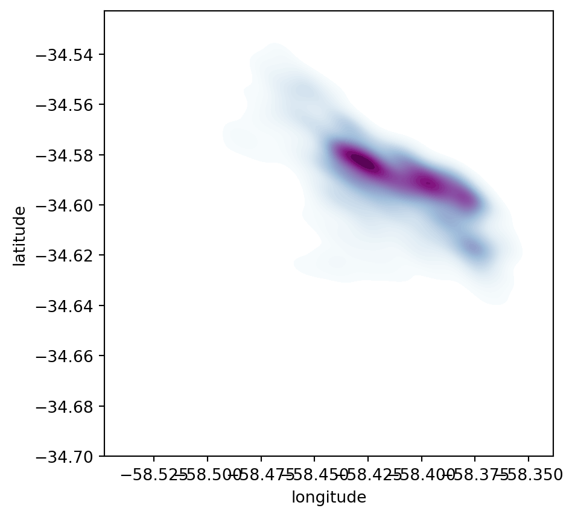
Seaborngreatly streamlines the process and boils it down to a single line.- The method
sns.kdeplot(which we can also use to create a KDE of a single variable) takes the X and Y coordinate of the points as the only compulsory attributes. - In addition, we specify the number of levels we want the color gradient to have (
n_levels), whether we want to color the space in between each level (share, yes), and thecolormapof choice.
Once we know how the basic logic works, we can insert it into the usual mapping machinery to create a more complete plot. The main difference here is that we now have to tell sns.kdeplot where we want the surface to be added (ax in this case). Toggle the expandable to find out the code that produces the figure below:
# Setup figure and axis
f, ax = plt.subplots(1, figsize=(5, 5))
# Add KDE layer that displays probability surface
sns.kdeplot(
x='longitude',
y='latitude',
data=listings, # because it is in 4326
n_levels=50,
fill=True,
alpha=0.25,
cmap="viridis"
)
# Remove axis
ax.set_axis_off()
# Add basemap
cx.add_basemap(
ax,
crs="EPSG:4326",
source=cx.providers.CartoDB.DarkMatterNoLabels
)
# Add title of the map
ax.set_title("KDE of airbnbs in Buenos Aires")
# Draw map
plt.show()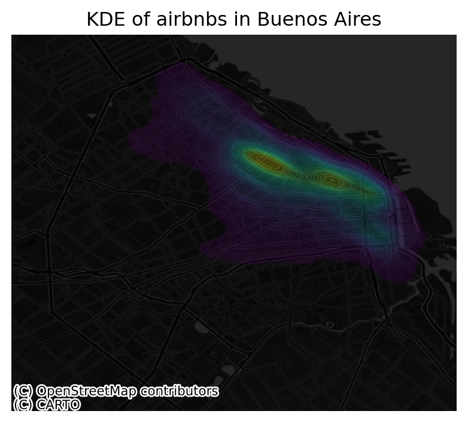
Cluster of points (DBSCAN)
Partitioning methods (K-means, PAM clustering) and hierarchical clustering are suitable for finding spherical-shaped clusters or convex clusters. In other words, they work well for compact and well separated clusters. Moreover, they are also severely affected by the presence of noise and outliers in the data.
Unfortunately, real life data can contain: i) clusters of arbitrary shape ii) many outliers and noise.
In this section, we will learn a method to identify clusters of points, based on their density across space. To do this, we will use the widely used DBSCAN algorithm. For this method, a cluster is a concentration of at least m points, each of them within a distance of r of at least another point in the cluster. Points in the dataset are then divided into three categories:
- Noise, for those points outside a cluster.
- Cores, for those points inside a cluster whith at least
mpoints in the cluster within distancer. - Borders for points inside a cluster with less than
mother points in the cluster within distancer.
Both m and r need to be prespecified by the user before running DBSCAN. This is a critical point, as their value can influence significantly the final result. Before exploring this in greater depth, let us get a first run at computing DBSCAN in Python. For more on this, check here.
The DBSCAN approach
The heavy lifting is done by the method DBSCAN, part of the excellent machine learning library scikit-learn. We first set up the details:
eps: maximum distance to look for neighbors from each locationmin_samples: minimum number of neighboring points required for a point to be considered part of a cluster
# Set up algorithm
algo = DBSCAN(eps=100, min_samples=50)We decide to consider a cluster of airbnb with more than 50 airbnbs within 100 metres from them, hence we set the two parameters accordingly. Once ready, we “fit” it to our data, but note that we first need to express the longitude and latitude of our points in metres. We have already projected to the Argentinian CRS but let’s revise this.
## Express points in metres
# Convert lon/lat into Point objects + set CRS
pts = gpd.points_from_xy(
listings["longitude"],
listings["latitude"],
crs="EPSG:4326"
)
# Convert lon/lat points to Buenos Aires CRS in metres
pts = gpd.GeoDataFrame({"geometry": pts}).to_crs(epsg=22176)
# Extract coordinates from point objects into columns
listings["X_metres"] = pts.geometry.x
listings["Y_metres"] = pts.geometry.yalgo.fit(listings[["X_metres", "Y_metres"]])DBSCAN(eps=100, min_samples=50)In a Jupyter environment, please rerun this cell to show the HTML representation or trust the notebook.
On GitHub, the HTML representation is unable to render, please try loading this page with nbviewer.org.
DBSCAN(eps=100, min_samples=50)
Once fit, we can recover the labels:
algo.labels_array([-1, 0, -1, ..., -1, -1, -1])And the list of points classified as cores:
# Print only the first five values
algo.core_sample_indices_[:5]array([ 1, 14, 24, 27, 52])The labels_ object always has the same length as the number of points used to run DBSCAN. Each value represents the index of the cluster a point belongs to. If the point is classified as noise, it receives a -1. Above, we can see that the first five points are effectively not part of any cluster. To make thinks easier later on, let us turn the labels into a Series object that we can index in the same way as our collection of points:
lbls = pd.Series(algo.labels_, index=listings.index)Now we already have the clusters, we can proceed to visualize them. There are many ways in which this can be done. We will start just by coloring points in a cluster in red and noise in grey:
# Setup figure and axis
f, ax = plt.subplots(1, figsize=(6, 6))
# Assign labels to tokyo table dynamically and
# subset points that are not part of any cluster (noise)
noise = listings.assign(
lbls=lbls
).query("lbls == -1")
# Plot noise in grey
ax.scatter(
noise["X_metres"],
noise["Y_metres"],
c='grey',
s=5,
linewidth=0
)
# Plot all points that are not noise in red
# NOTE how this is done through some fancy indexing, where
# we take the index of all points (tw) and substract from
# it the index of those that are noise
ax.scatter(
listings.loc[listings.index.difference(noise.index), "X_metres"],
listings.loc[listings.index.difference(noise.index), "Y_metres"],
c="red",
linewidth=0
)
# Display the figure
plt.show()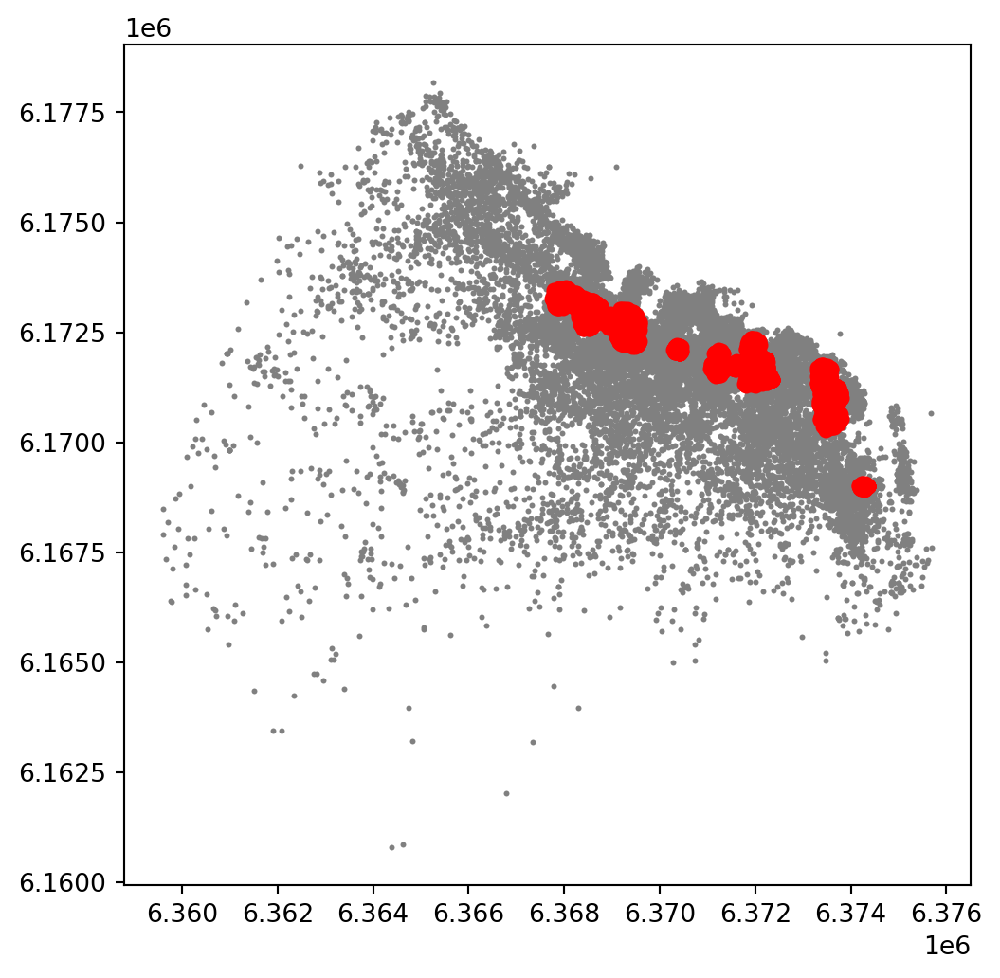
This is a first good pass. The algorithm is able to identify a few clusters with high density of airbnbs. However, as we mentioned when discussing DBSCAN, this is all contingent on the parameters we arbitrarily set. Depending on the maximum radious (eps) we set, we will pick one type of cluster or another: a higher (lower) radious will translate in less (more) local clusters. Equally, the minimum number of points required for a cluster (min_samples) will affect the implicit size of the cluster. Both parameters need to be set before running the algorithm, so our decision will affect the final outcome quite significantly.
For an illustration of this, let’s run through a case with very different parameter values. For example, let’s pick a larger radious (e.g. 250m) and a smaller number of points (e.g. 10):
# Set up algorithm
algo = DBSCAN(eps=200, min_samples=10)
# Fit to Tokyo projected points
algo.fit(listings[["X_metres", "Y_metres"]])
# Store labels
lbls = pd.Series(algo.labels_, index=listings.index)And let’s now visualise the result (toggle the expandable to see the code):
# Setup figure and axis
f, ax = plt.subplots(1, figsize=(6, 6))
# Assign labels to tokyo table dynamically and
# subset points that are not part of any cluster (noise)
noise = listings.assign(
lbls=lbls
).query("lbls == -1")
# Plot noise in grey
ax.scatter(
noise["X_metres"],
noise["Y_metres"],
c='grey',
s=5,
linewidth=0
)
# Plot all points that are not noise in red
# NOTE how this is done through some fancy indexing, where
# we take the index of all points (tw) and substract from
# it the index of those that are noise
ax.scatter(
listings.loc[listings.index.difference(noise.index), "X_metres"],
listings.loc[listings.index.difference(noise.index), "Y_metres"],
c="red",
linewidth=0
)
# Display the figure
plt.show()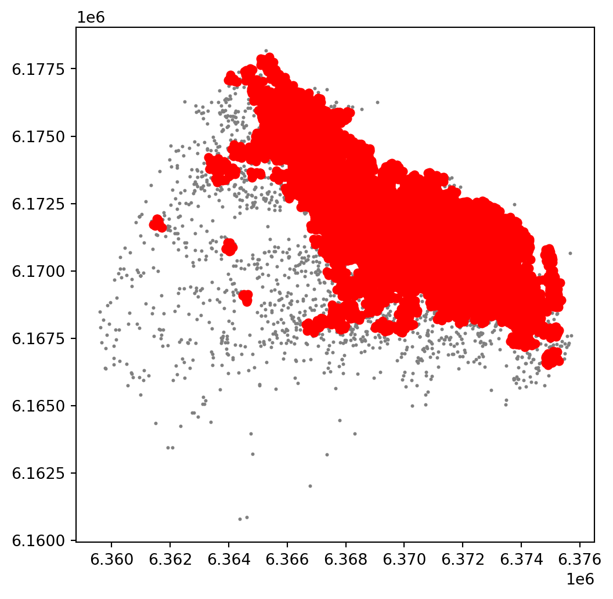
The A-DBSCAN algorithm
Once we know the parameters we’ll use, we can go ahead and run A-DBSCAN:
ax = listings_gdf_3857.plot(markersize=0.1, color='orange')
cx.add_basemap(ax, crs=listings_gdf_3857.crs.to_string(), source=cx.providers.CartoDB.Voyager);
plt.show()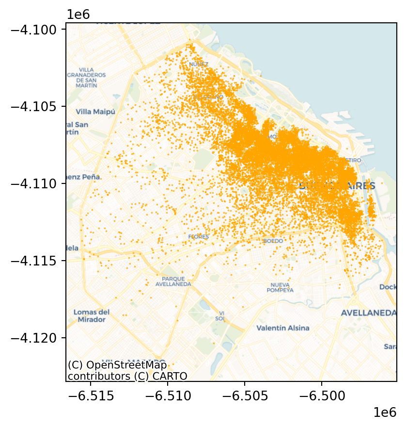
Before we get going, we will also pull out the projected coordinates into separate columns:
listings_gdf_3857["X"] = listings_gdf_3857.geometry.x
listings_gdf_3857["Y"] = listings_gdf_3857.geometry.y# Get clusters
adbs = ADBSCAN(150, 20, pct_exact=0.5, reps=10, keep_solus=True)
np.random.seed(1234)
adbs.fit(listings_gdf_3857)ADBSCAN(eps=150, keep_solus=True, min_samples=20, pct_exact=0.5, reps=10)In a Jupyter environment, please rerun this cell to show the HTML representation or trust the notebook.
On GitHub, the HTML representation is unable to render, please try loading this page with nbviewer.org.
ADBSCAN(eps=150, keep_solus=True, min_samples=20, pct_exact=0.5, reps=10)
ax = listings_gdf_3857.assign(lbls=adbs.votes["lbls"])\
.plot(column="lbls",
categorical=True,
markersize=2.5,
figsize=(8, 8)
)
cx.add_basemap(ax, crs= listings_gdf_3857.crs.to_string(), source=cx.providers.CartoDB.Voyager);
plt.show()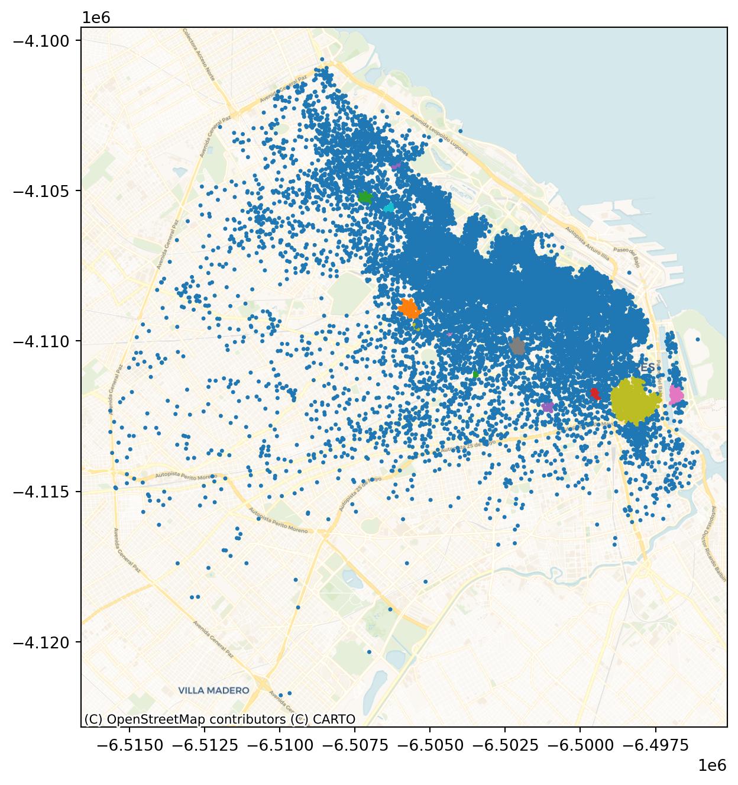
polys = get_cluster_boundary(adbs.votes["lbls"], listings_gdf_3857, crs=listings_gdf_3857.crs)ax = polys.plot(alpha=0.5, color="red")
cx.add_basemap(ax, crs=polys.crs.to_string(), source=cx.providers.CartoDB.Voyager);
plt.show()
The output is now very different, isn’t it? This exemplifies how different parameters can give rise to substantially different outcomes, even if the same data and algorithm are applied.